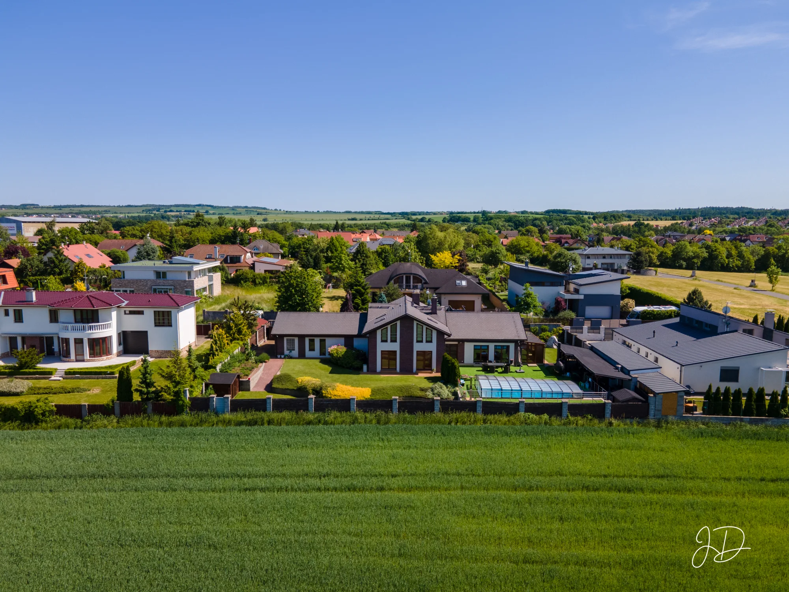

Jaké fotky z dronu pomohou při prodeji domu?
Při výběru fotek do inzerátu si představte kupujícího, který u domu nikdy nebyl. Z fotky obýváku pozná, jestli se mu líbí interiér. Pořád ale může mít otázku, co uvidí ze zahrady a jak blízko stojí sousední domy.

Co ukáže pohled od zahrady?
Na mém snímku z Jesenice si všimněte domu uprostřed. Mezi ním a plotem je trávník, vpravo zastřešený bazén. Hned za plotem začíná pole. Po obou stranách přitom stojí další domy. Kupující tak v jediném záběru vidí, na kterou stranu má zahrada otevřený výhled a kde má sousedy.
Podobný šikmý pohled se hodí jako úvodní fotka, pokud je zahrada jedním z důvodů ke koupi. Ideální je najít úhel, ze kterého jsou dům i prostor před ním dobře čitelné vedle sebe.
Kdy přidat pohled přímo shora?
Když zahrada pokračuje za rohem domu nebo se pozemek směrem dozadu zužuje, může část plochy při šikmém pohledu zakrýt střecha. Snímek shora ukáže, kolik místa kolem stavby zbývá a jak na sebe navazují dům, terasa a zahrada. Pokud chce kupující znát přesný průběh hranic parcely, přiložte k inzerátu také katastrální mapu.
Kdy ukázat i příjezd?
Z fotografie od pole není vidět, kudy se k domu přijíždí. Pokud je vjezd v boční ulici nebo k bráně vede delší cesta, pomůže záběr z opačné strany. Do jedné fotografie bych zahrnul odbočení z ulice, vjezd i místo k parkování. Kupující si pak může příjezd představit ještě před prohlídkou.
Poptat focení domu nebo pozemku